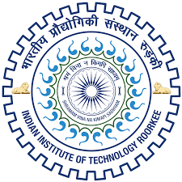

Indian Institute of Technology Roorkee
Award-Winning Faculty Members
While the idea of "top professors" is subjective, certain faculty members of IIT Roorkee are widely respected for their academic contributions, national recognition, and teaching excellence. Below are some of the most notable award-winning professors in recent years.

Prof. Praveen Kumar
Department of Civil Engineering
Lifetime Teaching Achievement Award, Teachers' Day 2025
Research Areas
Water Resources Engineering
Hydrology
Infrastructure Development
Sustainability
Highlights
- Honored for over three decades of outstanding teaching and mentorship in civil engineering
- Recognized for contributions to water resources engineering and hydrology
- Known for shaping generations of civil engineering graduates
- Renowned for clear instruction and practical-oriented teaching approach
Teaching Style: Practical-oriented with focus on real-world applications
Prof. Pradeep Kumar
Professor at IIT Roorkee
Lifetime Teaching Achievement Award, Teachers' Day 2024
Highlights
- Awarded in 2024 for exemplary career in teaching, student development, and academic service
- Known for innovating teaching methodologies and contributing to curriculum enhancement
- Highly respected by students for focus on clarity and foundational understanding
- Emphasizes real-world engineering applications in teaching
Contributions: Curriculum development and innovative teaching methods
Prof. Gopinath Packirisamy
Department of Biosciences & Bioengineering
Awards & Recognition
Ramkumar Prize for Outstanding Teaching & Research (2025)
Excellence in Teaching and Research Award (2024)
Research Areas
Biomedical Engineering
Molecular Biology
Bioengineering Applications
Healthcare Technology
Highlights
- Leading researcher in biosciences with major work in biomedical engineering
- One of the few IIT Roorkee faculty to receive major consecutive awards for both teaching and research
- Known for impactful publications, labs, and mentorship of research students
- Focus on bioengineering applications in healthcare
Specialization: Dual excellence in teaching and high-impact research